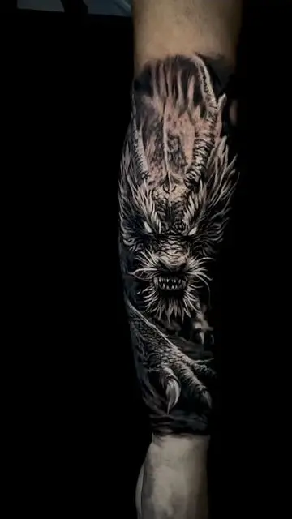
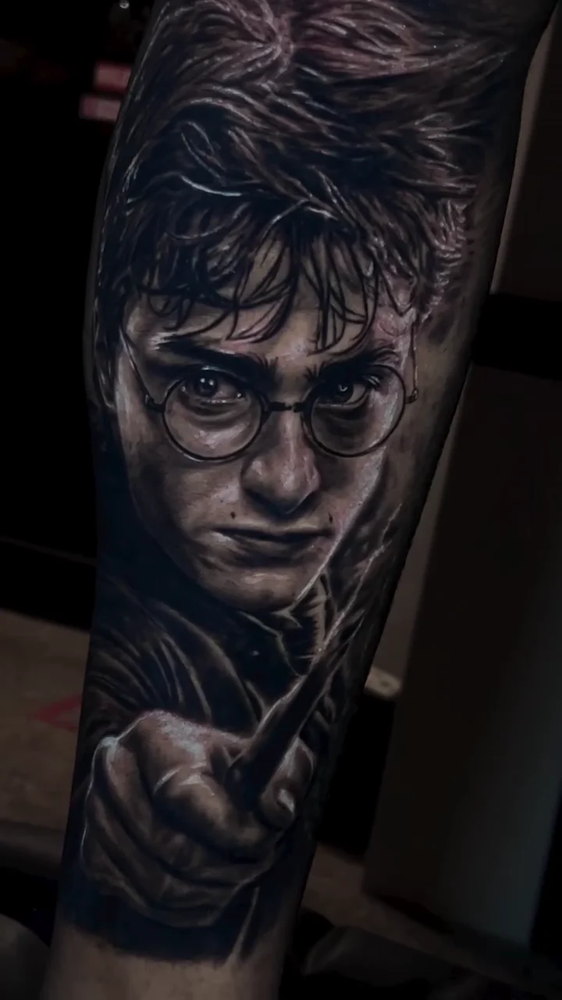
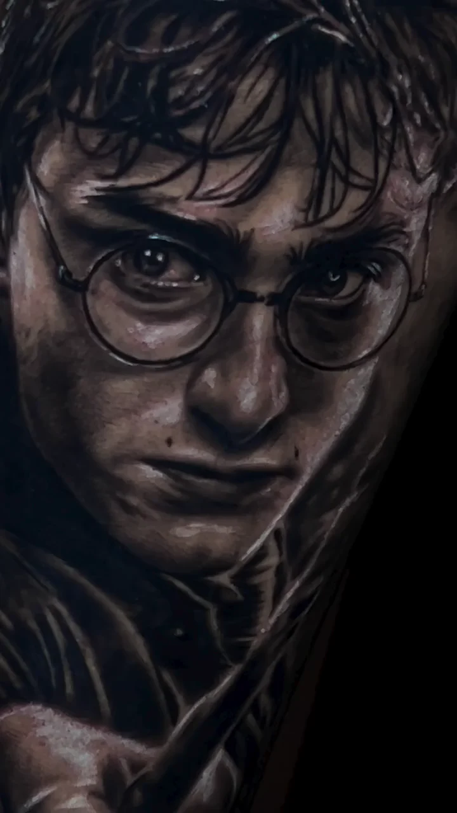
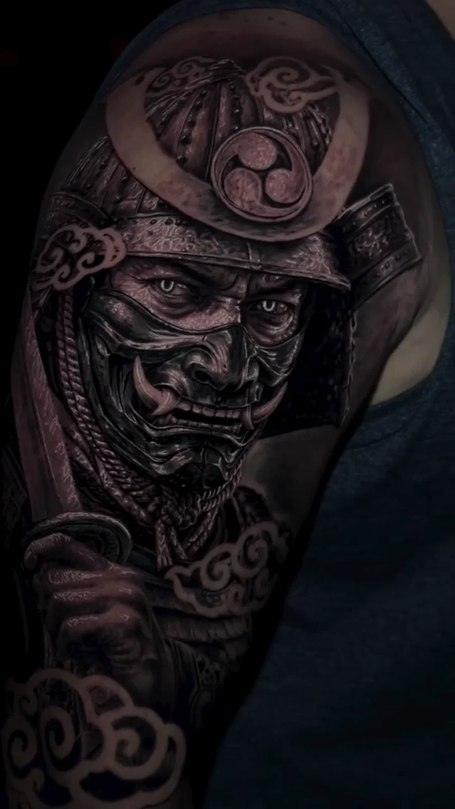
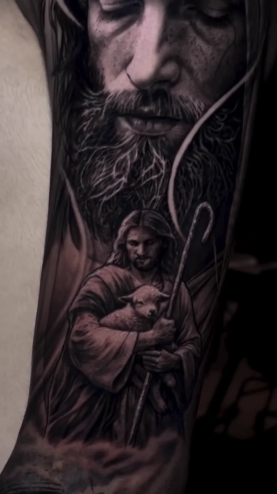
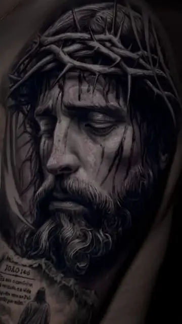
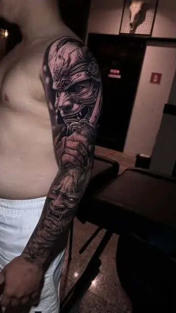
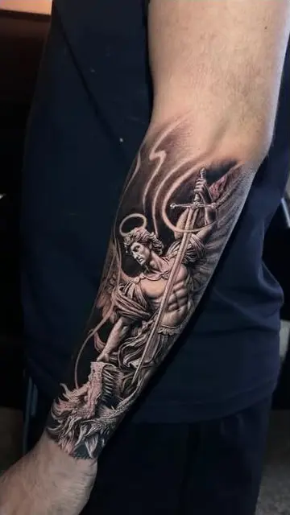
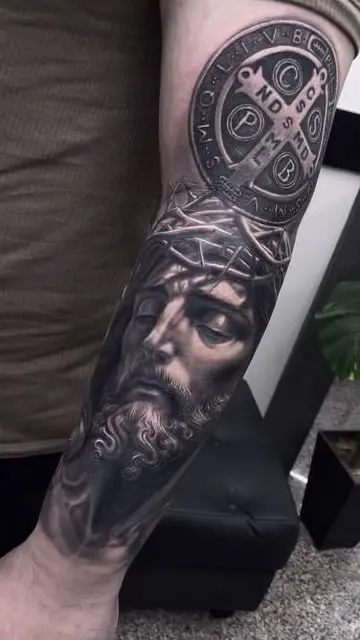
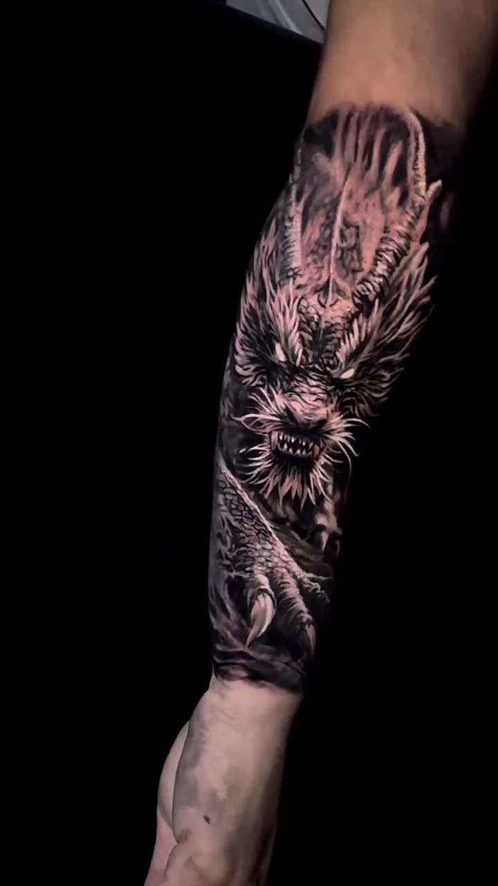

Textura e movimento

Artes autorais · Fortaleza — CE
Realismo e fechamentos. Atendimento individual no Black Tattoo Club.
Trabalhos selecionados
Projetos autorais em realismo, pensados para conversar com a anatomia e permanecer fortes em cada detalhe.

Retrato em realismo com composição vertical.

Contraste, textura e fluxo anatômico.

Composição narrativa em preto e cinza.
O portfólio mais recente está no perfil oficial.
@muell_tattooLinguagem
Do retrato ao fechamento, cada composição trabalha profundidade, leitura e presença na pele.





Imagens do portfólio público oficial de @muell_tattoo.

O artista
Muell Machado desenvolve artes autorais com foco em realismo e fechamentos.
Cada projeto começa na conversa, passa pelo desenho e ganha forma respeitando anatomia, contraste e significado.
Como funciona
Sem encaixe e sem projeto copiado. O horário é reservado depois da avaliação.
Envie referências, local do corpo e tamanho aproximado para a primeira análise.
O conceito é adaptado à anatomia e transformado em uma composição exclusivamente sua.
Com o projeto alinhado, você recebe a disponibilidade e as orientações para o atendimento.
Antes de agendar
O essencial para dar o primeiro passo.
Envie sua ideia, local do corpo, tamanho aproximado e referências. Com essas informações, o projeto passa por uma avaliação inicial.
Não. Todos os atendimentos são realizados exclusivamente com hora marcada para garantir tempo e atenção total a cada cliente.
Sim. A referência ajuda a comunicar a sua ideia, mas a composição final é desenvolvida e adaptada para você.
No Black Tattoo Club, Rua Tibúrcio Cavalcante, 955, Aldeota, Fortaleza — CE, 60125-045. O atendimento é realizado somente com hora marcada.
Solicite seu horário
Preencha os detalhes iniciais e continue o atendimento diretamente pelo WhatsApp.